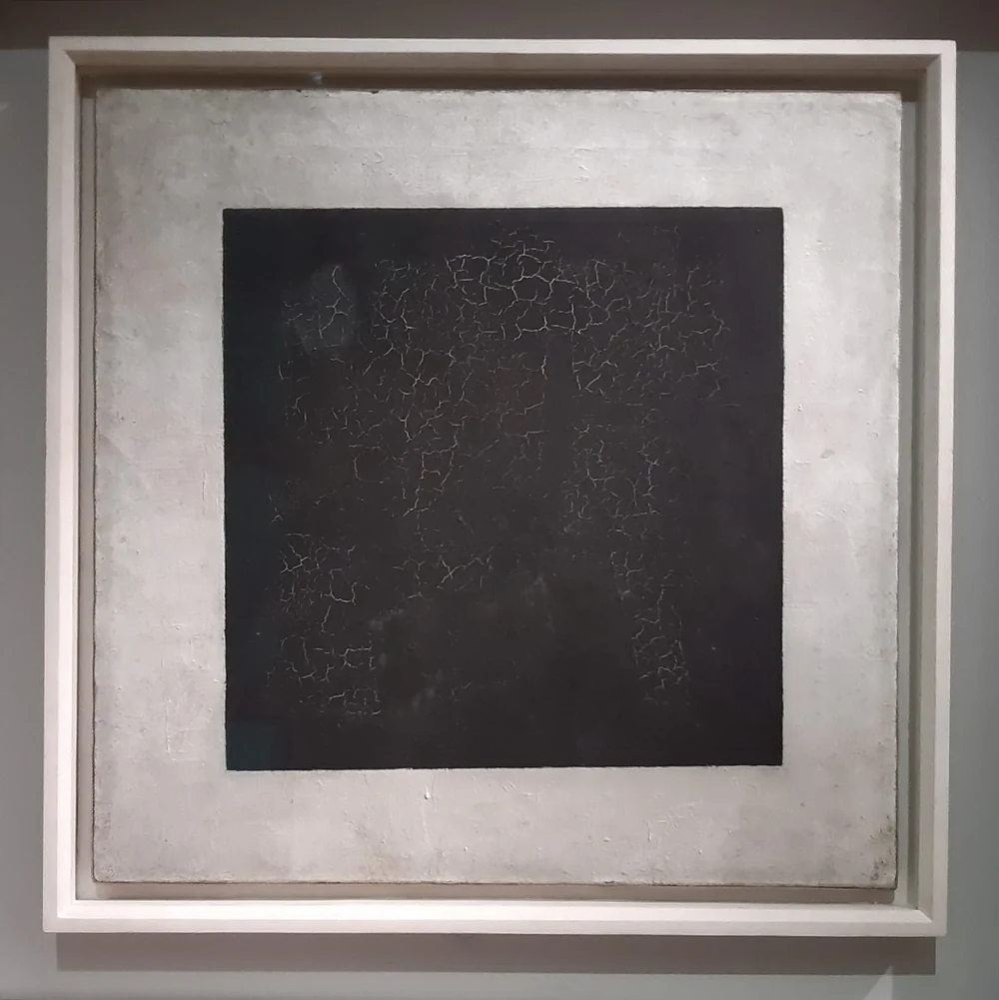

ここを見てみよう。
淡い地に、大きな黒い四角が置かれています。黒い面のひび割れや、周りに残る余白にも注目してみましょう。
本文公開・実作品画像1点／画像の収録は継続中
歴史的な美術運動・理論
Suprematism
四角や線が、画面の中に浮かんでいます。
シュプレマティスムは、風景や人をそのままかくことからはなれ、色や形の関係を探った活動です。
何がかかれているかだけでなく、形がどちらへ傾き、どのくらい離れているかを見ます。
白い絵の中にも、白の違いや、絵の具のぬり方の違いがあります。
実作品を見る

画像を表示できませんでした。下の出典ページで確認できます。
カジミール・マレーヴィチ / 1915年
1915年の絵を2021年6月2日に撮影した写真です。
淡い地に、大きな黒い四角が置かれています。黒い面のひび割れや、周りに残る余白にも注目してみましょう。
カジミール・マレーヴィチ《黒の正方形》、1915年。トレチャコフ美術館。CC BY-SA 4.0。写真：Shakko（ソフィア・バグダサロワ）、2021年6月2日。ウィキメディア・コモンズより。
出典で作品・資料を見る ↗CC BY-SA 4.0
作者は1935年没。原作品の保護期間と、写真の利用条件を区別しています。
写真：Shakko（ソフィア・バグダサロワ）。CC BY-SA 4.0。
表示用画像は縦横比を保って縮小しています。原画像の寸法と取得時のハッシュは出典記録に残しています。
原作品の保護期間は国により異なります。写真の再利用には表示されたCCライセンスが適用されます。
出典先の原画像を開く ↗画像の利用条件 ↗全体を残して縮小したJPEGとWebPです。切り抜き、拡大、色補正はしていません。原画像は出典先のリンクで開けます。
作品の知名度や画像の入手しやすさだけで選びません。紹介したい作品と、調べて分かったことをまとめました。画像を載せられるかどうかは、別に確かめています。画像の利用許諾を確認できていないものは掲載していません。
黒い正方形、白の絵画、理論をまとめた本、レリーフ（表面から形が浮き出る彫刻）という4つの役割から選びました。Malevichの例が中心です。女性作家やUNOVISの応用分野をすべてカバーする代表セットではありません。画像はすべて未取得です。
絵画・運動の象徴
自然の景色を写すのではなく、図形そのものを見せる作品です。
新しい絵の考え方を知らせる、大切な一枚になりました。
作品・資料の出典を見る ↗作品名（出典表記）：Black Suprematist Square（黒い正方形）
Kazimir Malevich / 1915（トレチャコフ美術館の表記） / 絵画・運動の象徴
館が1915年作とする作品です。作者が1929年に作った別の版や、今のグッズとは区別します。この個体の登録番号は未確認です。掲載写真の利用条件は画像の記録に示しています。
自然の姿を写すことから離れ、図形でつくった絵画が、運動の象徴となった例です。「0.10」展と、考え方を公表したことを結びつけて見ます。
原題：Suprematist Composition: White on White
白い形と、そのまわりの白には違いがあります。
傾きや位置のずれ、絵の具のあとにも注目したい作品です。
絵画・白と空間
強い原色がなくても、傾き、中心からのずれ、白の違いで形の関係が生まれます。筆の跡や、均一ではない輪郭から、絵具で描かれた物としての特徴を見ます。
MoMA 817.1935。油絵具とカンヴァスを使い、79.4×79.4cmです。館が説明する所蔵の歴史や、1999年の遺産管理者との合意は、画像を使う許可ではありません。
原題：Suprematizm. 34 risunka（Suprematism: 34 Drawings）
絵を見せるだけでなく、図と文章で考え方を伝える本です。
基本の形や、その組み合わせ方を学ぶためにも使われました。
書物・理論と教育
絵画を一つずつ見せるだけでなく、図と文章で、基本の形や組み合わせ方を共有する例です。美術館は、理論と見た目の両方を学ぶ教材として説明しています。
MoMA82.2001。各ページは21.8×18cmです。題名は34 Drawingsですが、表紙を含む挿図は35点あります。印刷者は「おそらく」とされているので、断定しません。掲載する具体的なページや見開きと、権利は未確認です。
原題：Suprematist Relief-Sculpture
曲がった面や、交差する部品が、実際に手前へ出ています。
平らな絵に奥行きをかくのとは、違うつくり方です。
レリーフ・実際の空間
曲面や交差する部材が、実際に手前へ出ています。平面に奥行きがあるように見せる方法との違いに注目です。この運動を平らな絵だけで説明しないための候補です。
MoMA1060.1983。色を塗った木、金属、厚紙を、木製パネルに取り付けています。50.8×39.3×7.6cmです。1915年当時の原作そのものではなく、1920年代の再制作として表示します。
物や風景を描かずに、色と形だけで何を伝えられるでしょうか。シュプレマティスムは、自然や物語を再現することから離れ、色・形・線の関係そのものを絵画のテーマにした運動です。単に丸や四角の模様を使うのではなく、形や色を通して、感覚や心の中の経験を探ろうとしました。
マレーヴィチ（Malevich）は、1915年12月の「0.10」展で、新しい抽象絵画（ちゅうしょうかいが：物の姿をそのまま描かず、色や形などで表す絵画）を発表しました。1917年の革命後に生まれた社会の理想とも接点があります。ただし、運動を発表したのは革命の前です。
以下は観察のための問いです。すべての作品に共通する固定ルールや、未取得画像の実見結果ではありません。
鮮やかな色だけに注目しないでください。《白の上の白（White on White）》では、白どうしのわずかな違いや、絵の具を塗った質感が働きます。画面上で作る、均一な白い正方形とは同じではありません。
サンセリフ（文字の端に小さな飾りがない書体）を使っているかどうかで、この絵画の運動は判断できません。1920年の『34 Drawings』では、手書き原稿を石版（せきばん）で刷った本文と、丸や四角などの図を使って、理論をどう伝えたかを見ます。
四角・円・直線を、外にある物を描いた形としてではなく、画面の中で互いにどう関わるかから見ます。輪郭がすべて機械のように正確だとは限りません。
《白の上の白》では、位置のずれや傾き、余白の関係が、動きや限りない空間を感じさせます。これは美術館の解説をもとにした見方です。このサイトでまだ取得していない画像を、直接観察した記述ではありません。
COMPARE
ロシア構成主義（Russian Constructivism）とは、近い時期・地域で広がりましたが、同じ意味ではありません。物の再現によらない色や形を重視する考え方と、制作・材料・使い道の関係を探る試みを、作品ごとに比べます。ただし、芸術家の集団UNOVIS（ウノヴィス）による応用芸術（生活の品などに芸術を生かす制作）や、街路の装飾もありました。「シュプレマティスムは絵画だけ、構成主義は実用品だけ」と分けることもできません。
項目を横に並べる ↗READ TODAY
現代の広告や画面に似た図形があっても、それだけで歴史上の運動に属するとは言えません。原作が何に描かれたか、手の跡がどう残るか、どんな理論があったかを調べます。その後の引用や、形を組み直した表現とは、分けて見ましょう。
このページを書くときに使った資料です。作品の説明、画像を入手できたかどうか、画像を使う条件は、それぞれ別に確かめています。検索結果で読んだ情報と、元のページを開いて確かめた情報も、調査の記録で分けています。
この項目の実作品画像は1点、参照・関連画像は0点です。画像の収集は続けています。